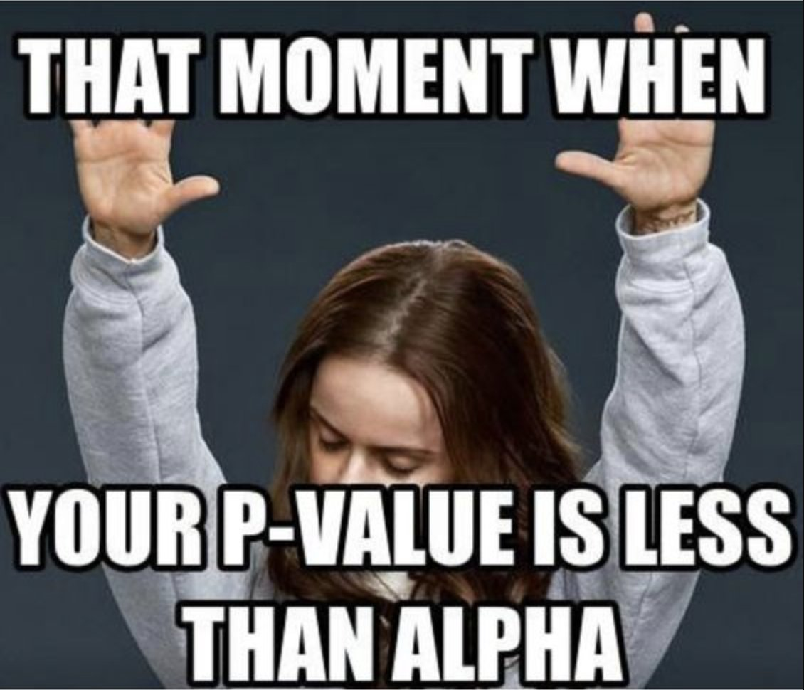

Übung 9
Aufgaben
Hinweise:
- Die Formelsammlung zu dieser Übung finden Sie auf OLAT. Benützen Sie sie, wann immer Sie möchten.
- Für die Berechnungen benötigen Sie einen einfachen Taschenrechner (auch gut auf dem Laptop möglich) mit dem Sie beispielsweise \(0.8^9\) ausrechnen können.
- Die Tabelle zur Standardnormalverteilung finden Sie im Lehrbuch und unter Onlinematerialen des Verlags hier.
- Für die Aufgaben und an der Prüfung stehen Ihnen die nötigen Ausschnitte der Tabellen zur Verfügung.
Aufgabe 9.1
Beantworten Sie folgende Fragen.
- Was ist ein Standardfehler und was ist seine Bedeutung?
Es handelt sich dabei um die Standardabweichung der Stichprobenkennwerteverteilung (z.B. des Mittelwerts). Der Standardfehler wird mit zunehmender Stichprobengrösse immer kleiner und ist ein Mass für die Genauigkeit einer Messung, d.h. je mehr Personen wir untersuchen, desto genauer wird unsere Messung. Um diese «Ungenauigkeit» zu berücksichtigen, müssen wir bei der Schätzung des Mittelwerts die Standardabweichung des Mittelwerts um \(\sqrt{n}\) korrigieren:
\(\sigma_\overline{x}=\sqrt \frac{\sigma_x^2}{n}=\frac{\sigma_x}{\sqrt n}\)
- Welchen Vorteil hat Cohens \(\delta\) gegenüber unstandardisierten Effektstärkemassen?
Cohens \(\delta\) ermöglicht es, Effekte über unterschiedliche Untersuchungen hinweg miteinander zu vergleichen, indem sie an der Standardabweichung des Merkmals in der Population standardisiert werden. Dadurch erhält die Effektgrösse eine einheitliche Metrik. Der Nachteil besteht allenfalls darin, dass die ursprüngliche Metrik verloren geht und der absolute Wert (beispielsweise in einer Metaanalyse) nicht (mehr) bekannt ist.
- Was besagt das zentrale Grenzwerttheorem?
Gemäss dem zentralen Grenzwertsatz nähert sich die Stichprobenkennwerteverteilung von Stichprobenmittelwerten aus Stichproben der Grösse \(n\) mit zunehmendem \(n\) einer Normalverteilung an – unabhängig davon, wie das Merkmal in der Population verteilt ist. Für ein grosses \(n\) ist die Stichprobenkennwerteverteilung des Mittels normalverteilt.
Unter diesen beiden Links finden Sie – bei Interesse – anschauliche Visualisierungen, bei denen verschiedenen Parameter variiert werden können.
Philipp Plewa: Central Limit Theorem
Seeing Theory: Central Limit Theorem
Aufgabe 9.2
Geben Sie bei jeder Aussage an, ob sie richtig oder falsch ist.
Ein kleiner postulierter Effekt in der Population…
- führt immer dazu, dass die Fehlerwahrscheinlichkeit \(\alpha\) gross ist.
- kann am besten dann aufgedeckt werden, wenn der Standardfehler des Mittelwerts klein ist.
- führt dazu, dass der statistische Test eine grosse Teststärke hat.
- führt dazu, dass man sich fälschlicherweise für die Alternativhypothese entscheidet.
- verringert von vornherein die Irrtumswahrscheinlichkeit \(\beta\).
a: falsch
b: richtig
c: falsch
d: falsch
e: falsch
Aufgabe 9.3
Geben Sie bei jeder Aussage an, ob sie richtig oder falsch ist.
Ein grosser Stichprobenumfang …
- führt dazu, dass auch kleinere Effekte mit grösserer Wahrscheinlichkeit aufgedeckt werden.
- ist notwendig, um grosse Effekte aufzudecken.
- führt dazu, dass der Test eine geringe Teststärke hat.
- führt dazu, dass die Standardabweichung der Stichprobenkennwerteverteilung klein wird.
- führt dazu, dass die Fehlerwahrscheinlichkeiten \(\alpha\) und \(\beta\) kleiner werden.
a: richtig
b: falsch
c: falsch
d: richtig
e: falsch
Anmerkung: Die Antwort e. wäre dann richtig, wenn zuvor ein bestimmtes Verhältnis zwischen \(\alpha\) und \(\beta\) festgelegt wurde. Im Regelfall wird jedoch \(\alpha\) vorher festgelegt und ist dann natürlich auch nicht durch den Stichprobenumfang beeinflusst. Wenn \(\alpha\) vorher festgelegt wurde, wird ‒ unter ansonsten gleichen Bedingungen ‒ \(\beta\) umso kleiner, je grösser der Stichprobenumfang ist.
Aufgabe 9.4
In welchem Fall ist die Teststärke – bei gegebenem \(\alpha\), gegebenem Effekt und gegebenem Stichprobenumfang \(n\) – grösser: wenn der Test einseitig oder zweiseitig durchgeführt wird? Warum?
Die Teststärke ist beim zweiseitigen Test kleiner als beim einseitigen Test.
Da man beim zweiseitigen Testen das Signifikanzniveau \(\alpha\) auf die beiden Seiten der Verteilung aufteilt und der Flächenanteil, der zu einer Seite hin abgeschnitten wird, dementsprechend nur \(\alpha/2\) beträgt, während die Teststärke sich demgegenüber immer nur auf eine Richtung des Effekts bezieht, ist die Teststärke beim zweiseitigen Test kleiner als beim einseitigen Test.
Aufgabe 9.5
Ein Testwert sei innerhalb einer Population normalverteilt mit Erwartungswert \(\mu=120\) und Varianz \(\sigma^2=225\). Sie ziehen eine einfache Zufallsstichprobe und berechnen den Mittelwert.
- Bestimmen Sie den Erwartungswert der Stichprobenverteilung des Mittelwerts.
\(\mu_\overline{x}=120\)
- Bestimmen Sie den Standardfehler des Mittelwerts bei Stichproben des Umfangs von \(n=4\), \(n=9\), \(n=25\) und \(n=10'000\).
\(\sigma_\overline{x}=\frac{\sigma_x}{\sqrt n}=\frac{15}{\sqrt 4}=7.5\)
\(\sigma_\overline{x}=\frac{\sigma_x}{\sqrt n}=\frac{15}{\sqrt 9}=5\)
\(\sigma_\overline{x}=\frac{\sigma_x}{\sqrt n}=\frac{15}{\sqrt {25}}=3\)
\(\sigma_\overline{x}=\frac{\sigma_x}{\sqrt n}=\frac{15}{\sqrt {10 000}}=0.15\)
- Welchen Stichprobenumfang muss man wählen, damit der Standardfehler des Mittelwerts genau 1 beträgt?
\(\sigma_\overline{x}=\frac{\sigma_x}{\sqrt n}=\frac{15}{\sqrt n}=1\)
\(\sqrt n=15\)
\(n=225\)
Da die Varianz \(\sigma^2=225\) beträgt, müsste der Stichprobenumfang ebenfalls bei \(n=225\) liegen.
Aufgabe 9.6
Ein Konditionstraining soll die durchschnittliche Ausdauerleistung der Spielerinnen des FC Mediana erhöhen. Die durchschnittliche Ausdauerleistung beträgt \(\mu_0=30\) Punkte mit einer Standardabweichung von \(\sigma=10\). Die Leistung soll nun durch das Konditionstraining um mindestens 5 Punkte gesteigert werden.
- Formulieren Sie die Nullhypothese und die spezifische Alternativhypothese. Entscheiden Sie zuerst, ob es sich um eine gerichtete oder ungerichtete Hypothese handelt.
\(H_0\): \(\mu=\mu_0\): Das Konditionstraining bewirkt keine Verbesserung der Leistung.
\(H_1\): \(\mu>\mu_0\): Das Konditionstraining bewirkt mindestens eine Verbesserung der Leistung um 5 Punkte.
- Berechnen Sie die standardisierte Effektstärke nach Cohen.
\(d=\frac{\overline{x}-\mu_0}{\sigma_x}=\frac{35-30}{10}=0.5\)
Dies entspricht einer Verbesserung der Leistung um eine halbe Standardabweichung und entspricht einem mittleren Effekt.
- Führen Sie eine a-priori-Poweranalyse durch:
Der FC Mediana besteht aus \(n=12\) Spielerinnen. Wir sind an einer Erhöhung der Leistung um 5 Punkte interessiert und prüfen dies auf dem 1%-Signifikanzniveau.
\(z_\beta=z_{1-\alpha}-\sqrt{n}\cdot \delta\)
Wir verwenden in dieser Aufgabe das 1%-Signifikanzniveau.
\(\alpha=0.01\) -> \(z_{1-\alpha}=z_{99\%}=2.33\)
\(\delta=\frac{5}{10}=0.5\)
\(n=12\)
\(z_\beta=z_{1-\alpha}-\sqrt{n}\cdot \delta=2.33-\sqrt{12}\cdot 0.5=0.598\)
Nun kann die Wahrscheinlichkeit \(\beta\) für den kritischen Wert \(z_\beta=0.6\) in der Tabelle abgelesen werden.
\(\beta=0.7257\)
Zum Schluss wir die Gegenwahrscheinlichkeit berechnet, um die Teststärke zu bestimmen.
\(1-\beta=1-0.7257=0.2743\)
Die Wahrscheinlichkeit eine Verbesserung von 5 Punkten auf dem Signifikanzniveau von 1% zu entdecken (bei der gegebenen Stichprobengrösse und Standardabweichung) liegt bei nur 27%.
Wir geben uns nicht mit einer so geringen Teststärke zufrieden und beschliessen daher die optimale Stichprobengrösse zu berechnen (siehe 9.6d.), um den Effekt in einer grösseren Stichprobe zu untersuchen.
- Berechnen Sie die optimale Stichprobengrösse:
Wie gross muss die Stichprobe sein, um mindestens eine Power von 90% zu erreichen?
\(n=\frac{(z_{1-\alpha}-z_\beta)^2}{\delta^2}\)
Wir verwenden in dieser Aufgabe das 1%-Signifikanzniveau.
\(\alpha=0.01\) -> \(z_{1-\alpha}=z_{99\%}=2.33\)
Da wir den Wert von \(\beta=10\%\) nicht in der Tabelle ablesen können, lesen wir den Wert auf der anderen Seite der z-Verteilung ab, d.h. bei \(z_{90\%}\). Da wir aber den Wert für \(\beta=10\%\) benötigen, setzen wir ein negatives Vorzeichen.
\(\beta=0.10\) -> \(z_{1-\beta}=z_{90\%}=1.29\) -> \(z_\beta=-1.29\)
\(\delta=0.5\)
\(n=\frac{(z_{1-\alpha}-z_\beta)^2}{\delta^2}=\frac{(2.33-(-1.29))^2}{0.5^2}=\frac{13.1044}{0.25}=52.4176\)
Wir benötigen also eine Stichprobengrösse von \(n=53\) Personen, um einen spezifischen Effekt mit 90% Wahrscheinlichkeit entdecken zu können, wenn er wirklich existiert.
Aufgabe 9.7
In der PISA-Studie 2003 in Deutschland hat sich gezeigt, dass Schülerinnen und Schüler (\(n=5500\)) im Fähigkeitsbereich »Problemlösen« im Mittel \(x=513\) Punkte erzielten. Die Werte sind bei PISA so normiert, dass ein Wert von \(\mu=500\) den Populationsmittelwert und ein Wert von \(\sigma_x=100\) die Populationsstandardabweichung darstellt. (adaptiert von Eid et al., 2017, S. 276)
- Testen Sie mit Hilfe eines Einstichproben-z-Tests (\(\alpha=1{\%}\), einseitiger Test), ob die Schülerinnen und Schüler signifikant besser sind als der entsprechende Normwert der Population.
Die gerichtete \(H_0\) lautet in diesem Beispiel: \(0≤500\). Da die Populationsstandardabweichung bekannt und die Stichprobe sehr gross ist, kann hier ein z-Test verwendet werden. Es wird ein Signifikanzniveau von \(\alpha=0.001\) festgelegt. Der Standardfehler des Mittelwerts kann nach der Formel berechnet werden. Er beträgt in unserem Beispiel:
\(\sigma_\overline{x}=\frac{\sigma_x}{\sqrt n}=\frac{100}{\sqrt {5500}}=\frac{100}{74.16}=1.35\)
Der Wert der Prüfgrösse (z-Wert) kann ebenfalls berechnet werden. Er beträgt in unserem Beispiel:
\(z_\overline{x}=\frac{\overline{x}-\mu_0}{\sigma_x}=\frac{513-500}{1.35}=9.64\)
Die Wahrscheinlichkeit für diesen oder jeden grösseren Wert unter der Nullhypothese ist extrem klein, \(p<0.00001\). Der kritische Wert bei einem 1%-Niveau wäre \(z_{99\%}=2.33\) (siehe Tabelle A.2). Unser Wert liegt deutlich darüber. Die Schülerinnen und Schüler schneiden demzufolge signifikant besser im PISA-Untertest «Problemlösen» ab als die Population. In diesem Fall wird die Nullhypothese auf dem 1%-Signifikanzniveau verworfen.
- Berechnen Sie die standardisierte Effektgrösse für dieses Ergebnis. Bewerten Sie die Effektstärke in Hinblick auf ihre praktische Bedeutsamkeit.
\(d=\frac{\overline{x}-\mu_0}{\sigma_x}=\frac{513-500}{100}=0.13\)
Es handelt sich hierbei um eine kleinen Effekt, der aber durch die grosse Stichprobe (und daher einem kleinen Standardfehler) signifikant wird.
Bravo! Sie haben die Übungen für diese Woche geschafft.

Reuse
Citation
@online{senn2024,
author = {Senn, Mirjam and Wyssen, Gerda},
title = {Übung 9},
date = {2024-11-11},
url = {https://psylu.github.io/statistik1-hs24/pages/exercises/exercise_09.html},
langid = {en}
}